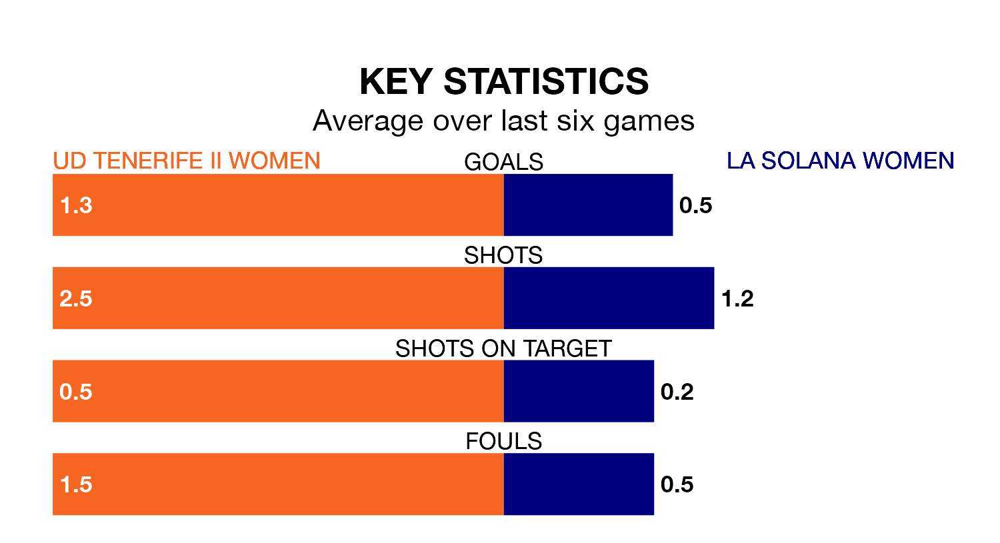

La Solana Women travel for Sunday lunchtime's match against UD Tenerife II Women looking to bounce back from defeat last time out in Segunda Federación Femenina.
La Solana, who sit zero in the league after 17 games, fell to a 2-0 home defeat to Málaga Women on January 21.
They face a Tenerife II Women side who picked up a win in their last match, a 4-0 victory against Córdoba Women, and who sit fourth in the table.
With nine goals in 17 games so far this season, La Solana are the league's-15th-lowest scorers with 0.5 goals per game. And they are conceding more than average, letting in 23 goals at a rate of 1.4 per game.
Tenerife II Women, meanwhile, are above average scorers, with 1.7 goals per game, compared to a league average of 1.3. They have conceded 0.5 goals per game.
The hosts are in mixed form in Segunda Federación Femenina, with two wins and four draws from their last six games.
With a win and a draw over that period, la Solana's form is much worse – they have taken four points from 18, compared to Tenerife II Women's 10.
Updated: 08:51 (UTC), 25/01/24